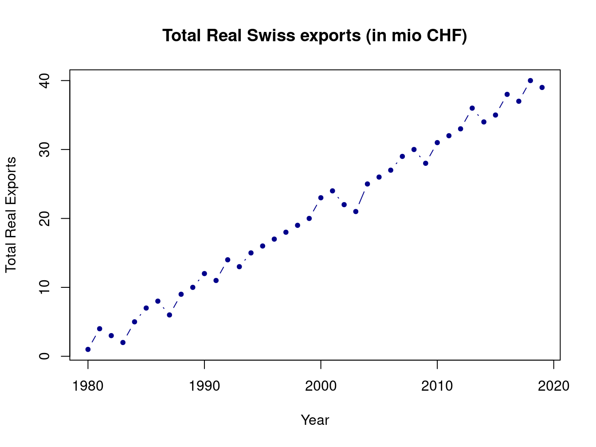

2 Frédéric
2.1 About Me
Hello! It’s me Frédéric. I am a Zurich born and raised Master’s student at the University of Zurich and a Research Assistant at the KOF Swiss Economic Institute. Apart from studying my passions are football
Figure 2.1: This was a save…not a goal
and theatre sports.

Figure 2.2: Did I hear someone laughing?…
2.2 My Research
My first and latest research project is about short-term forecasting of quarterly Swiss exports with monthly indicators:
When the aim is to forecast quarterly overall Swiss exports, does forecast accuracy improve when forecasting different subcomponents of quarterly Swiss exports separately and aggregating afterwards (disaggregate approach) instead of targeting overall quarterly Swiss exports directly (aggregate approach)?
- Aggregate approach: Forecast quarterly Swiss exports (as published by the Swiss State Secretariat for Economic Affairs SECO) directly.
- Disaggregate approach 1: Forecast quarterly Swiss goods exports and quarterly Swiss services exports (both as published by the SECO) separately and aggregate the two forecasts afterwards.
- Disaggregate approach 2: Forecast the following exports subcategories separately and aggregate them afterwards:
- Quarterly Swiss pharmaceutical and chemical goods exports (as constructed following SECO)
- Quarterly Swiss machinery and electronics goods exports (as constructed following SECO)
- Quarterly Swiss watches, precision instruments and bijouterie goods exports (as constructed following SECO)
- Quarterly Swiss miscellaneous goods exports (as constructed following SECO)
- Quarterly Swiss services exports (as published by SECO)
Forecasting models:
- Unrestricted mixed data sampling (U-MIDAS) following Foroni et al. (2015) in combination with forecast pooling following Timmermann (2006)
- Mixed-frequency dynamic factor model (MF-DFM) following Giannone et al. (2008) and Banbura et al. (2011) based on the R-package of de Valk et al. (2019)
- Optional: Factor MIDAS following Marcellino and Schumacher (2010)
- Benchmark forecasting models: Rolling in-sample mean, AR model

Figure 2.3: Total Swiss export growth.